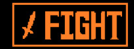
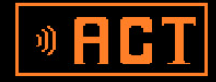
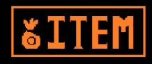

ATACAR
Atacar é o básico do princípio GENOCIDA, é usado para casos de combate. Caso queira um caminho
pacifista, não há o porque usa-lo.

AGIR
Agir é uma forma ambígua, pode ser usado no estilo GENOCIDA ou PACIFISTA. Basicamente ali se formam
opções de rebaixar o oponente para provoca-lo ou usar de sua habilidade carismática para contornar a
batalha e deixar seu oponente de lado

ITEM
Item é acumulado a partir de seus ganhos no jogo, os itens são coletados aleatóriamente. Eles podem
servir de diversas formas no jogo, o formato mais comum é o de RECUPERAR HP
PIEDADE
A piedade é o princípio do modo PACIFISTA, ele serve para basicamente, ter piedade de seus oponentes, deixar-los ir.